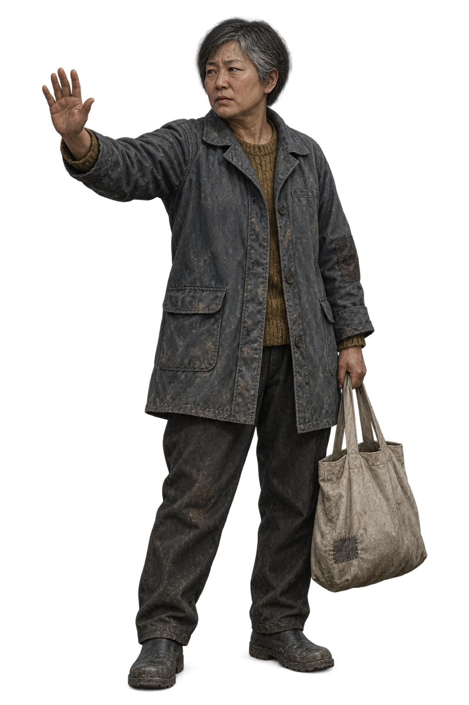

인물 원형 / 01
길에서 마주친 사람
이름 없는 행인도, 자기 얼굴을 가진 한 사람.
50대 여성 행인
가상 인물 · 검토용
넓은 턱 · 낮은 콧대 · 좁은 눈매 · 짧은 새치 머리.
발을 딛는 무게, 가방 쪽으로 낮아진 어깨,
다가오는 차를 보는 시선까지 하나의 인물로.
도로에서는 이만큼
360px 기준 · 정적 비교이 크기에서 읽혀야 하는 건 손짓·체형·짐.
얼굴의 차이는 가까이 보는 사건 초상에서도 이어져야 해.
실제 게임에 넣을 때는?
위는 원형을 줄여 놓은 크기 비교일 뿐이야. 이 PNG를 그대로 움직이는 도로에 붙이지 않아. 확인받은 얼굴·머리·옷·체형을 기준으로 기존 달구지와 같은 캔버스/픽셀 렌더러에 옮기고, 손짓·몸·짐의 움직임을 나눠야 해.
달구지 크기는 고정. 발견 → 감속 → 정차 → 사건 화면의 흐름과 날씨·야간 대응도 별도로 확인할 거야.
얼굴은 역할이 아니라 사람에게

주연 · 동료
기존 정본을 지킨다. 초상, 사건 그림, 도로 모습이 같은 사람이어야 한다.

이름 있는 NPC
각자 고유한 얼굴을 둔다. 다른 인물에게 빌려 쓰지 않고 재등장해도 유지한다.
이름 없는 사람
같은 직업이어도 다른 얼굴. 사건 속 인물 ID마다 얼굴을 정하고, 다시 만나도 바꾸지 않는다.
이번에는 한 명의 원형만 만들었어.
전체 인물의 중복 얼굴 정리와 ID 연결은 아직 미구현이야.